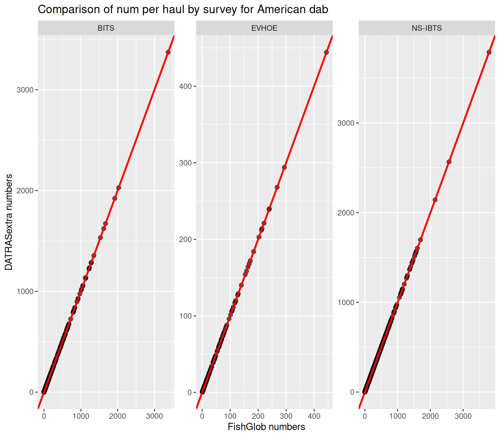
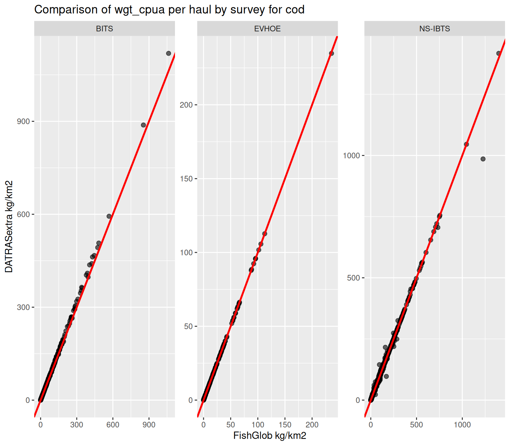

Background
The FishGlob database is a global compilation of standardized scientific trawl survey data used to study large-scale patterns in marine fish biodiversity and community structure.
FishGlob harmonizes data from multiple regional monitoring programs by standardizing:
- taxonomic information
- sampling effort
- catch metrics (abundance and biomass per unit area)
The dataset integrates numerous long-term fisheries-independent surveys, including several surveys available through the ICES DATRAS database.
ICES DATRAS (Database of Trawl Surveys) provides access to standardized survey data collected in European seas, including haul-level sampling information (HH), length distributions (HL), and individual data (CA).
The DATRASextra package provides tools
to process raw DATRAS survey data and generate outputs that are
compatible with the FishGlob data structure.
This vignette demonstrates a workflow to:
- download DATRAS survey data
- harmonize and clean_datras raw survey tables
- standardize species taxonomy
- estimate swept area and biomass
- generate FishGlob-compatible datasets
The workflow can be applied to a single species or to multiple
species. For illustration, this vignette uses mini.
data("mini_fishglob", package = "DATRASextra")an example dataset containing 6 species across 4 surveys (BITS, BTS, EVHOE, NS-IBTS):
Amblyraja radiata, Hippoglossoides platessoides, Trisopterus esmarkii, Lophius piscatorius, Lepidorhombus whiffiagonis
References
Maureaud, A., et al. (2021) FISHGLOB_data: an integrated dataset of fish biodiversity sampled with scientific bottom-trawl surveys. Sci Data 11, 24 (2024). https://doi.org/10.1038/s41597-023-02866-w
ICES Database on Trawl Surveys (DATRAS), ICES, Copenhagen, Denmark. https://datras.ices.dk
Libraries
## Loading required package: DATRAS##
## Attaching package: 'dplyr'## The following objects are masked from 'package:stats':
##
## filter, lag## The following objects are masked from 'package:base':
##
## intersect, setdiff, setequal, unionLoad the dataset
data(mini_fishglob)Clean the dataset
The clean_fishglob() function harmonizes the raw DATRAS
tables and prepares them for processing. Species names and identifiers
are standardized using WoRMS taxonomy with
correct_species() This step ensures:
- consistent scientific names
- valid AphiaID identifiers
- standardized taxonomic classification
dat <- clean_fishglob(mini_fishglob)Reduce dataset size
The raw dataset contains many variables that are not required for the FishGlob output.
The prune_fishglob() function removes unnecessary
columns to reduce memory usage and improve processing speed.
dat <- prune_fishglob(dat)Compute swept area
Catch per unit area requires an estimate of the area swept by each haul.
The function below:
- calculates swept area when gear information is available
- imputes missing values when necessary
dat <- add_swept_area_fishglob(dat)Estimate biomass
FishGlob reports both numbers and biomass.
The add_total_weight_by_haul_fishglob() function
converts length data to weight using species-specific
length–weight relationships.
dat <- add_total_weight_by_haul_fishglob(dat)Format the FishGlob output
Finally, the dataset is formatted to match the FishGlob data structure.
datras <- as_fishglob(dat)
head(datras)## survey source timestamp haul_id
## 2 BITS DATRAS ICES 2026-05 BITS:2015:1:DE:06SL:TVS:22004:7
## 4 BITS DATRAS ICES 2026-05 BITS:2015:1:DE:06SL:TVS:22007:8
## 44 BITS DATRAS ICES 2026-05 BITS:2015:1:DE:06SL:TVS:24212:15
## 110 BITS DATRAS ICES 2026-05 BITS:2015:1:DK:26HI:TVS:1:1
## 111 BITS DATRAS ICES 2026-05 BITS:2015:1:DK:26HI:TVS:10:10
## 112 BITS DATRAS ICES 2026-05 BITS:2015:1:DK:26HI:TVS:10:10
## country sub_area continent stat_rec station stratum year month day
## 2 multi-countries <NA> europe 37G0 <NA> <NA> 2015 2 25
## 4 multi-countries <NA> europe 37G1 <NA> <NA> 2015 2 26
## 44 multi-countries <NA> europe 38G3 <NA> <NA> 2015 2 28
## 110 multi-countries <NA> europe 43G0 <NA> <NA> 2015 2 24
## 111 multi-countries <NA> europe 41G2 <NA> <NA> 2015 2 27
## 112 multi-countries <NA> europe 41G2 <NA> <NA> 2015 2 27
## quarter latitude longitude haul_dur area_swept gear depth num num_cpue
## 2 1 54.4427 10.6547 0.5 0.07697517 TVS 19 1.000 2.000
## 4 1 54.4513 11.3738 0.5 0.08368994 TVS 20 1.000 2.000
## 44 1 54.9908 13.3447 0.5 0.09056468 TVS 47 1.000 2.000
## 110 1 57.4721 10.6695 0.5 0.07173646 TVS 26 90.573 181.146
## 111 1 56.1206 12.4688 0.5 0.06509888 TVS 26 1.000 2.000
## 112 1 56.1206 12.4688 0.5 0.06509888 TVS 26 118.635 237.270
## num_cpua wgt wgt_cpue wgt_cpua verbatim_name verbatim_aphia_id
## 2 12.99120 0.01259440 0.0251888 0.1636164 <NA> NA
## 4 11.94887 0.06313433 0.1262687 0.7543837 <NA> NA
## 44 11.04183 0.05369922 0.1073984 0.5929377 <NA> NA
## 110 1262.57974 2.06026668 4.1205334 28.7199381 <NA> NA
## 111 15.36125 2.93347786 5.8669557 45.0618790 <NA> NA
## 112 1822.38158 5.13663026 10.2732605 78.9050479 <NA> NA
## accepted_name aphia_id class order
## 2 Hippoglossoides platessoides 127137 Teleostei Pleuronectiformes
## 4 Hippoglossoides platessoides 127137 Teleostei Pleuronectiformes
## 44 Hippoglossoides platessoides 127137 Teleostei Pleuronectiformes
## 110 Hippoglossoides platessoides 127137 Teleostei Pleuronectiformes
## 111 Amblyraja radiata 105865 Elasmobranchii Rajiformes
## 112 Hippoglossoides platessoides 127137 Teleostei Pleuronectiformes
## family genus rank survey_unit
## 2 Pleuronectidae Hippoglossoides Species BITS-1
## 4 Pleuronectidae Hippoglossoides Species BITS-1
## 44 Pleuronectidae Hippoglossoides Species BITS-1
## 110 Pleuronectidae Hippoglossoides Species BITS-1
## 111 Rajidae Amblyraja Species BITS-1
## 112 Pleuronectidae Hippoglossoides Species BITS-1Compare it with Fishglob
Get the surveys in common
common_surveys <- intersect(fishglob$survey, datras$survey)
fishglob_common <- fishglob[fishglob$survey %in% common_surveys, ]
datras_common <- datras[datras$survey %in% common_surveys, ]
fishglob_common$haul_id <- gsub(" ", ":", fishglob_common$haul_id) # use our haul format
# get common haul ids
common_haul_ids <- intersect(fishglob_common$haul_id, datras_common$haul_id)
# fishglob
fishglob_agg <- fishglob_common %>% filter(haul_id %in% common_haul_ids) %>%
group_by(haul_id, accepted_name, survey) %>%
summarise(wgt_cpua = sum(wgt_cpua, na.rm = TRUE), num = sum(num, na.rm = TRUE), .groups = "drop")
# datras_extra
datras_agg <- datras_common %>% filter(haul_id %in% common_haul_ids) %>%
group_by(haul_id, accepted_name, survey) %>%
summarise(wgt_cpua = sum(wgt_cpua, na.rm = TRUE), num = sum(num, na.rm = TRUE), .groups = "drop")
merged_agg <- merge(
fishglob_agg,
datras_agg,
by = c("survey","haul_id", "accepted_name"),
suffixes = c("_fishglob", "_datras")
)
am_dab <- merged_agg %>%
filter(accepted_name == "Hippoglossoides platessoides") # compare american dab as examplePlot it
ggplot(am_dab, aes(x = num_fishglob,
y = num_datras)) +
# Points
geom_point(alpha = 0.6, size = 2) +
geom_abline(slope = 1, intercept = 0,
color = "red", linewidth = 1) +
labs(
x = "FishGlob numbers",
y = "DATRASextra numbers",
title = "Comparison of num per haul by survey for American dab"
) +
facet_wrap(~ survey, scales = "free")
ggplot(am_dab, aes(x = wgt_cpua_fishglob,
y = wgt_cpua_datras)) +
# Points
geom_point(alpha = 0.6, size = 2) +
geom_abline(slope = 1, intercept = 0,
color = "red", linewidth = 1) +
labs(
x = "FishGlob kg/km2",
y = "DATRASextra kg/km2",
title = "Comparison of wgt_cpua per haul by survey for cod"
) +
facet_wrap(~ survey, scales = "free")
As you can see there are small differences in densities due to sligtly different swept are imputation methods.
Downloading the FishGlob DATRAS surveys
The previous example used a small dataset to keep the vignette lightweight. To reproduce the DATRAS part of the FishGlob dataset, the full set of surveys used in FishGlob can be downloaded like this:
library(DATRASextra)
surveys <- c("NS-IBTS", "EVHOE", "SWC-IBTS", "BITS", "IE-IGFS",
"FR-CGFS", "NIGFS", "ROCKALL", "PT-IBTS",
"SP-NORTH", "SP-ARSA", "SP-PORC")
# create temporary directory
tmp <- tempdir()
# download survey data
download_datras(surveys = surveys, dir = tmp)
# read raw DATRAS tables
raw <- read_datras(file.path(tmp, surveys))Downloading and processing these surveys take some time, as they include multiple decades of trawl survey data.